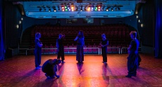
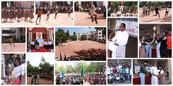

Drama
Students can take Drama as a subject from Grades 8 to 12 and we have Drama teachers who also offer extra Drama lessons. We have a long tradition of excellent major productions such as The Wizard of Oz, Sabrina Fair, The Sound of Music, Simply Broadway, Fame, Pygmalion, Chicago, Terry Pratchett's Wyrd Sisters, Godspell, West Side Story, Pirates of Penzance, A Midsummer Night's Dream and Footloose. The school alternates annually between major musical or demanding dramatic productions, in traditional or modern genres. There are also Senior and Junior One-Act Plays, produced, written and directed by students themselves, and space for experience in ancillary professional dramatic crafts such as lighting and production. Students enter external Drama exams and local Drama Eisteddfodau.
Music
Music fosters social interaction, the development of concentration and memory, physical co-ordination, self-discipline and creative thinking. As music pervades everyday life, it is hoped that the musical experiences offered at the College will inspire students to be involved with music after their secondary education whether for leisure, interest or career. Music is a very relevant part of every student's education.
"Music expresses that which cannot be said and on which it is impossible to be silent." -Victor Hugo
Societies
The Societies period is an opportunity for students to do something quite different to the normal academic programme, and hopefully to discover a talent or learn a hobby. The Pyramid Council and Grade 11 and 12 Councils meet during this period, as do the large societies of SCA, Ubuntu and Interact, with the Networking Society servicing the school's computers. The rest of the school has the opportunity to choose a hobby-oriented society from a list that includes the Business Game, Cooking Club, Driver's Education, Decoupage, Stained Glass Painting and Fabric Painting amongst many others.